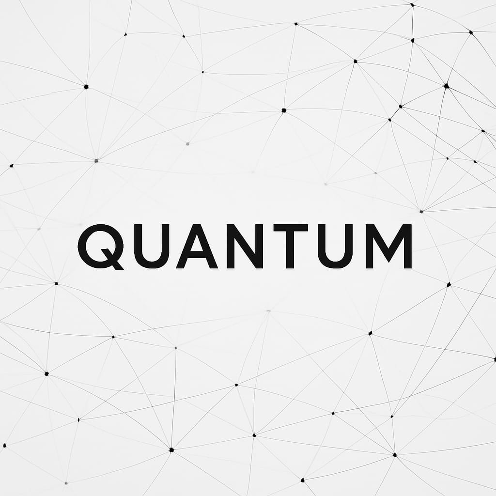

Quantum - Explorando a Física Quântica
Início
Sobre
Serviços
Preços
Contato
Blog
Blog Quantum
Explore artigos por categoria:
Tecnologia
Como a Computação Quântica Está Transformando o Mundo
5 Aplicações Reais da Física Quântica em 2025
Conceitos
Entrelaçamento Quântico Explicado de Forma Simples